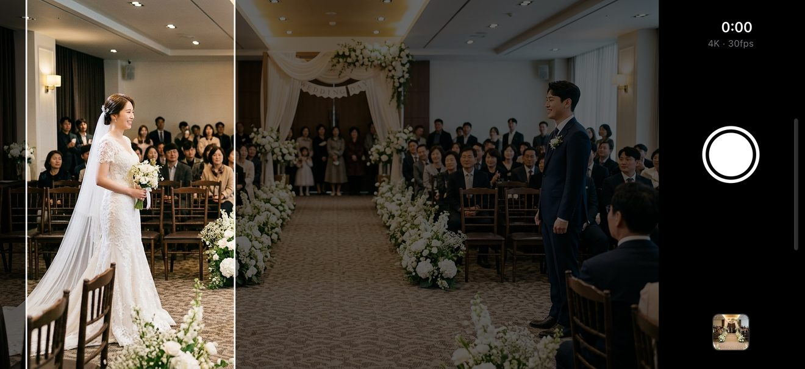
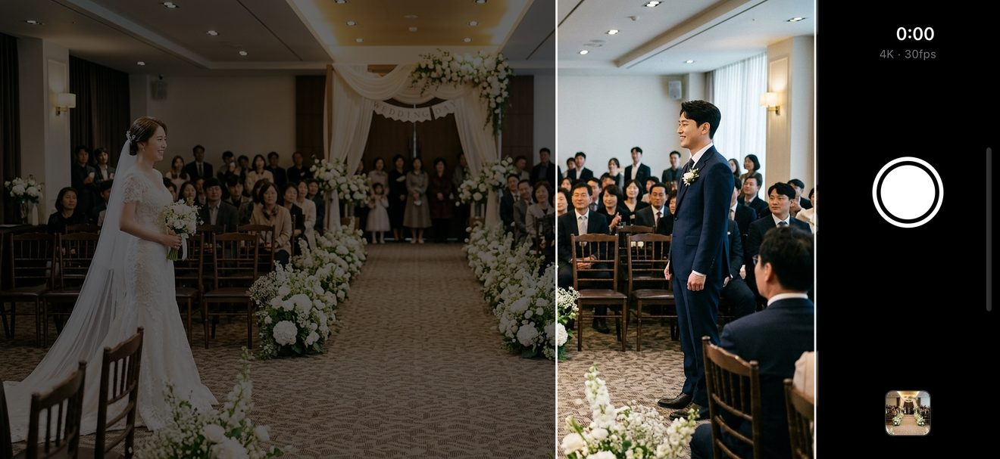
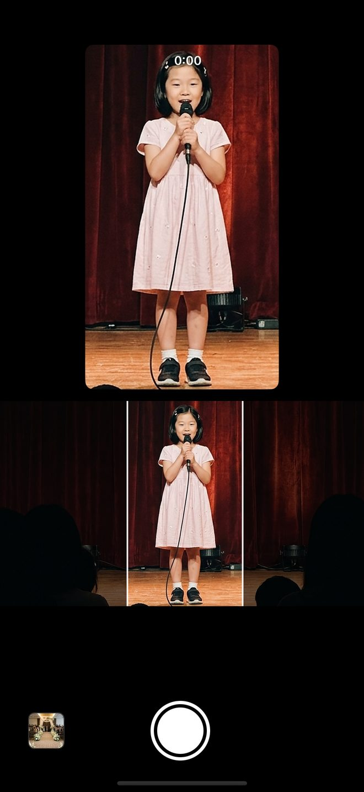
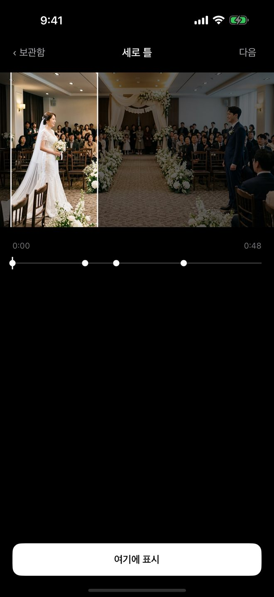
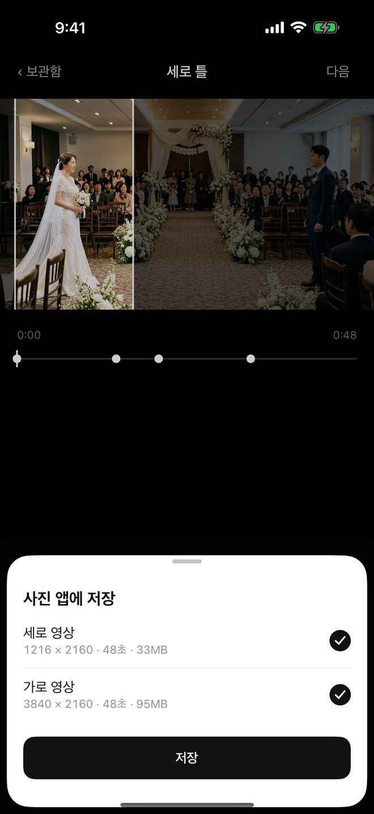
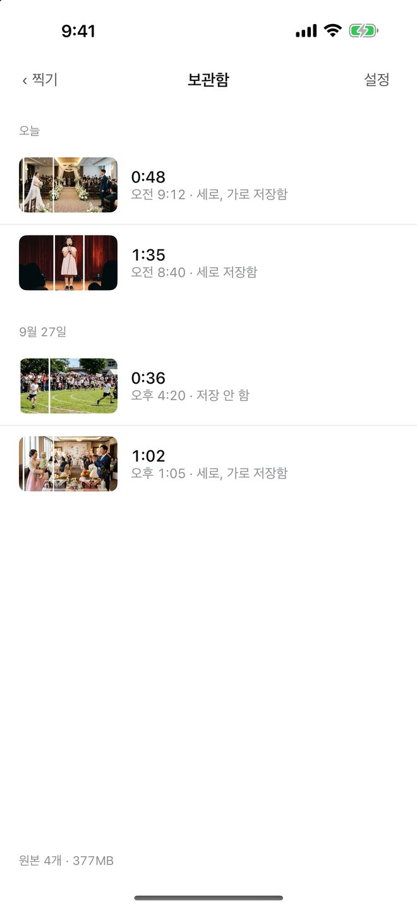

결혼식, 돌잔치, 공연. 다시 못 찍는 자리에서 한 번만 찍으세요. 세로 영상과 가로 영상이 둘 다 남고, 세로에 누구를 담을지는 찍은 뒤에도 정할 수 있습니다.
가로 원본 3840 × 2160 · 밝은 부분이 세로 영상
세로 영상 1216 × 2160
찍는 중에
화면 아무 데나 좌우로 쓸면 세로 틀이 손가락을 따라갑니다. 틀을 정확히 잡을 필요가 없어서 한 손으로 됩니다. 신부를 담다가 신랑에게, 그대로 이어서.


가로로 들면 원본이 화면을 채우고, 버튼은 오른쪽 한 줄에 있습니다.

세로로 들면 위는 세로 영상 그대로, 아래는 가로 원본.

찍은 뒤에
찍는 중에 틀을 못 옮겼어도 괜찮습니다. 원본은 가로 전체가 남아 있으니까요.
저장
원하는 것만 골라 넣습니다. 찍은 시각 자리에 들어가서 사진 앱에서 찾기 쉽습니다.
| 들고 찍은 방향 | 세로 영상 | 가로 영상 |
|---|---|---|
| 가로로 | 1216 × 2160 | 3840 × 2160 |
| 세로로 | 958 × 1700 | 3024 × 1700 |
가로로 들고 찍은 세로 영상은 원본 높이 2160 을 그대로 써서, 세로 숏폼 규격 1080 보다 넓습니다. 화질은 4K 30fps(기본), 4K 60fps, 1080p 30fps.

세로 틀이 가운데에 고정돼 있습니다. 신부가 왼쪽에 앉고 신랑이 오른쪽에 서 있으면 세로 영상에는 한 사람만 남습니다.
세로 틀을 옮깁니다. 찍는 중에도, 찍은 뒤에도. 두 사람을 번갈아 담아도 가로 원본은 그대로 남습니다.
약속
필터, 음악, 자막, 편집은 없습니다. 찍은 영상은 앱 안 보관함에 원본으로 두고, 날짜별로 묶어 보여 줍니다. 무엇을 사진 앱에 넣었는지도 한 줄에 보입니다.

자주 묻는 것
가로로 들고 찍으면 원본 높이 2160 을 그대로 써서 세로 영상이 1216 × 2160 입니다. 세로 숏폼 규격 1080 × 1920 보다 넓습니다.
됩니다. 세로로 들면 센서 가운데의 16:9 띠를 가로 원본으로 씁니다. 세로 영상 958 × 1700, 가로 영상 3024 × 1700 입니다. 가장 넓게 담으려면 가로로 들어 주세요.
앱 안 보관함에 원본으로 있습니다. 「저장」을 눌러야 사진 앱에 들어갑니다.
앱 안의 원본이 지워집니다. 이미 사진 앱에 넣은 영상은 그대로 남습니다.
읽지 않습니다. 영상을 넣는 권한만 묻습니다.
보관함의 원본도 함께 지워집니다. 남길 영상은 먼저 사진 앱에 저장하세요.
무료입니다. 구독도 광고도 없습니다.